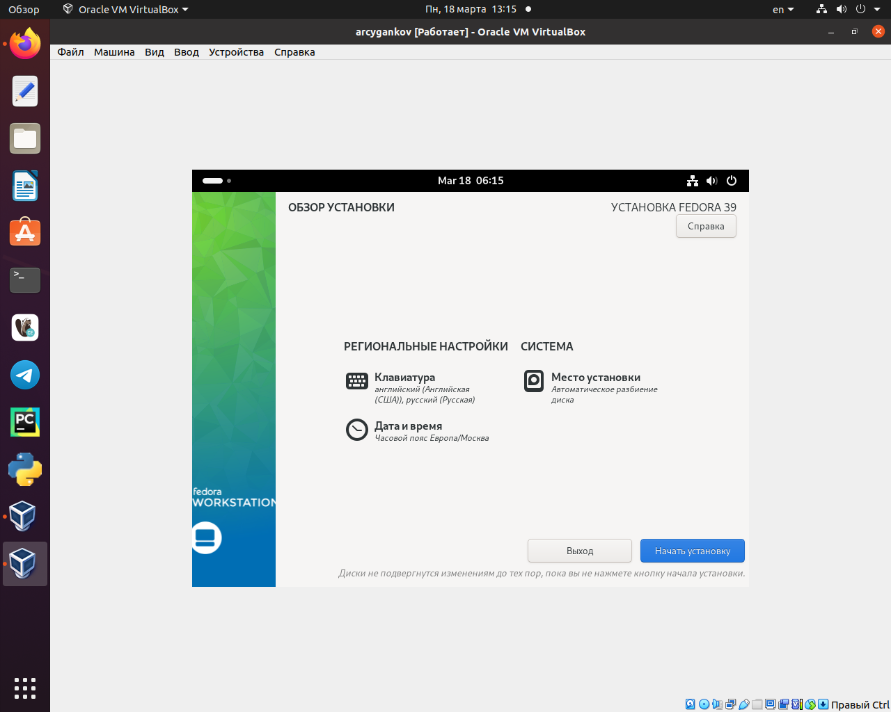
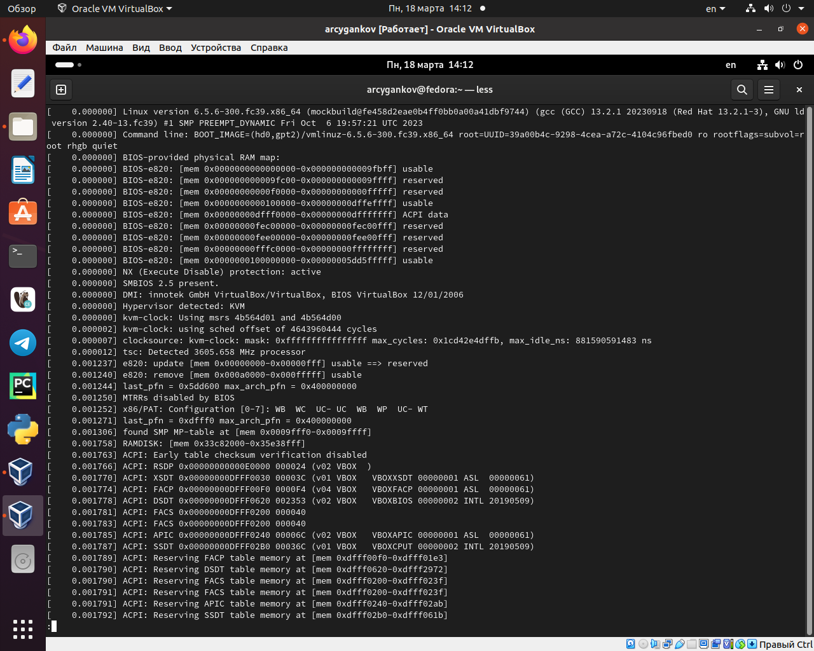
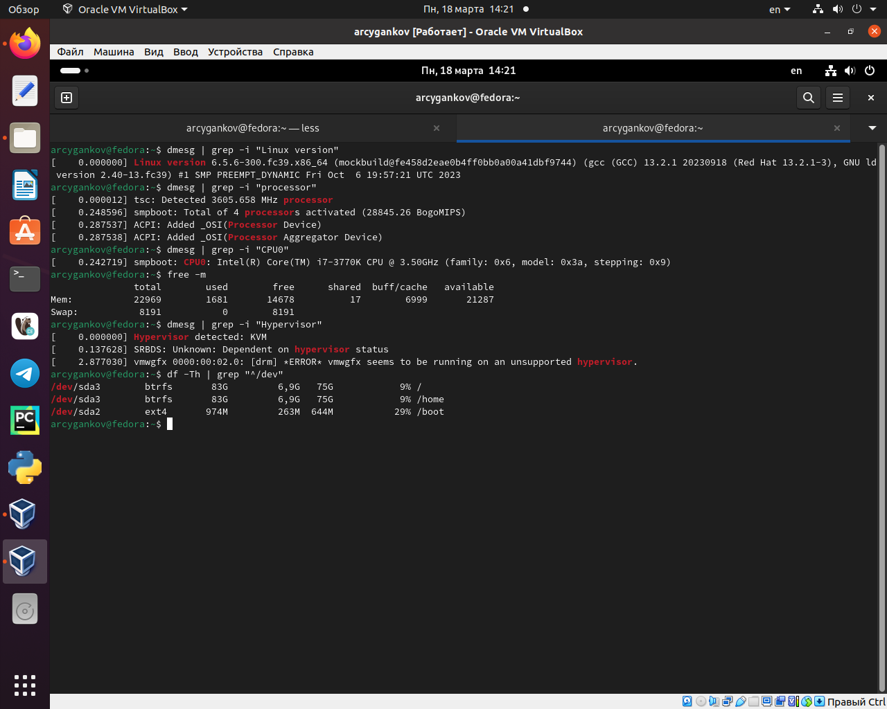

Linux - ОС, которая с каждым годом получает все большее распространения.
Умение использовать и настраивать виртуальные машины полезно как в обучающих целях, так и в работе.
Объект и предмет исследования
Программа VirtualBox;
ОС Linux, дистрибутив Fedora;
Цели и задачи
Приобретение практических навыков установки операционной системы на виртуальную машину;
Приобретение навыка настройки минимально необходимых для дальнейшей работы сервисов;
Настройка виртуальной машины
Скачивание и настройка
Виртуальная машина
Установка Linux (Fedora)
установки ОС
Процесс запуска
Обновления
Программа для работы с файлами.
tmux mc
Команды для определения некоторых данных о системе.
Версия ядра Linux, Частота процессора, Модель процессора, Объём доступной оперативной памяти, Тип обнаруженного гипервизора, Тип файловой системы корневого разделаПоследовательность монтирования файловых систем
Результаты работы
Настроено автоматическое обновление
Установлены драйвера
Произведена настройка раскладки клавиатуры
Установлены удобные инструменты для работы в терминале, а также с документами